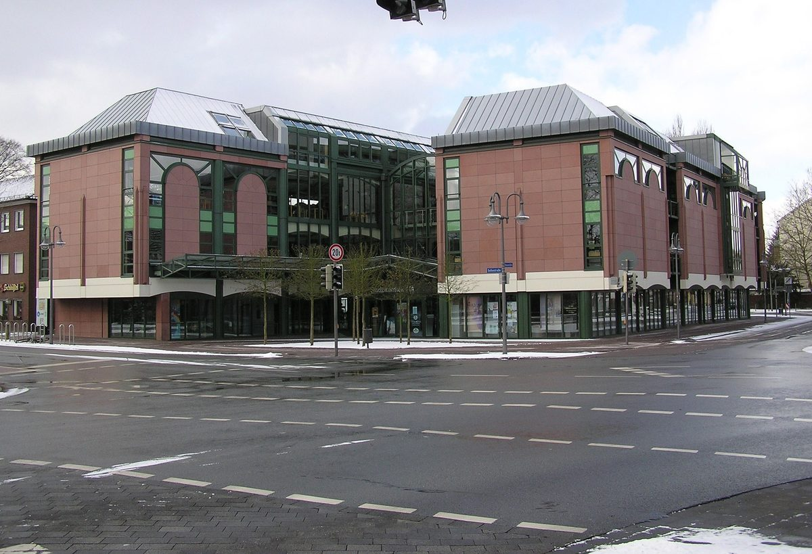

독일 귀터슬로 시, 첫 '기후 포럼' 열어 시민에너지 논의…지역 협동조합 4곳 사업 소개

시립도서관에 약 40명 참석, 지역 시민에너지 사업의 과제·필요한 지원 토론…다음 포럼은 내년 4월
독일 노르트라인베스트팔렌주 귀터슬로 시가 정치·행정·시민·전문가가 함께 이야기하는 새 참여 방식인 '기후 포럼'을 처음 열고 첫 주제로 시민에너지를 다뤘다고 밝혔다. 포럼에는 시립도서관 로비에 약 40명이 모였다. 주 에너지·기후 기관 Energy4Climate의 페트라 셉스마이어가 시민에너지의 가능성과 잠재력을 발표했고, Sonnenwende eG·Grün Energie eG·RheWie eG·BEG33 eG 등 지역 시민에너지협동조합이 자기 사업을 소개했다. 참가자들은 지역 시민에너지 사업의 접근 방식과 과제, 필요한 지원을 논의했고, 시는 여기서 나온 의견을 이어 가겠다고 했다. 다음 기후 포럼은 내년 4월에 열릴 예정이다.
시민에너지 관점
시청이 지역 시민에너지협동조합 4곳을 한자리에 불러 사업과 어려움을 듣고 이를 정례 포럼으로 이어 가는 것은 행정이 시민 발전의 동반자가 되는 방식이다. 40명 남짓한 모임이 무엇을 바꾸겠느냐는 물음이 나올 수 있지만, 조합이 필요한 지원을 행정에 직접 말하고 반년 뒤 다시 점검하는 창구가 생겼다는 점이 핵심이다. 시민 조합이 부지·인허가·자금에서 막히는 지점을 행정이 정기적으로 들어야 지역 소유 발전소가 늘어난다. 우리 지자체도 햇빛소득마을과 시민발전 협동조합이 참여하는 정례 협의 자리를 만들어야 한다.
출처: Stadt Gütersloh(시 보도자료) 2026-11-06 기자명 없음 원문 보기
ドイツ・ギュータースロー市、初の「気候フォーラム」で市民エネルギーを議論…地域の協同組合4団体が事業を紹介
市立図書館に約40人が参加、地域の市民エネルギー事業の課題と必要な支援を討論…次回は来年4月
ドイツ・ノルトライン＝ヴェストファーレン州のギュータースロー市は、政治・行政・市民・専門家が共に話し合う新しい参加の場「気候フォーラム」を初めて開き、最初のテーマとして市民エネルギーを取り上げたと発表した。フォーラムには市立図書館のロビーに約40人が集まった。州のエネルギー・気候機関Energy4ClimateのPetra Schepsmeier氏が市民エネルギーの可能性と潜在力について発表し、Sonnenwende eG、Grün Energie eG、RheWie eG、BEG33 eGなど地域の市民エネルギー協同組合が自らの事業を紹介した。参加者は地域の市民エネルギー事業の進め方や課題、必要な支援について議論し、市はここで出た意見を引き継いでいくとした。次回の気候フォーラムは来年4月に開かれる予定だ。
市民エネルギーの視点
市役所が地域の市民エネルギー協同組合4団体を一堂に集めて事業と困りごとを聞き、それを定例のフォーラムにつなげることは、行政が市民発電のパートナーになるやり方だ。40人ほどの集まりで何が変わるのかという問いもありうるが、組合が必要な支援を行政に直接伝え、半年後に再び点検する窓口ができたことが要点だ。市民組合が用地・許認可・資金でつまずく点を行政が定期的に聞いてこそ、地域所有の発電所は増える。韓国の自治体も、太陽光所得村や市民発電協同組合が参加する定例の協議の場をつくるべきだ。
出典: Stadt Gütersloh(시 보도자료) 2026-11-06 No byline 原文を読む
德国居特斯洛市首办"气候论坛"讨论市民能源…当地4家合作社介绍项目
约40人到场市立图书馆，讨论当地市民能源项目的课题和所需支持…下届论坛定于明年4月
德国北莱茵-威斯特法伦州居特斯洛市宣布，首次举办由政界、行政部门、市民和专家共同交流的新型参与平台"气候论坛"，首个议题为市民能源。约40人聚集在市立图书馆大厅参加论坛。州能源与气候机构Energy4Climate的Petra Schepsmeier介绍了市民能源的可能性与潜力，Sonnenwende eG、Grün Energie eG、RheWie eG、BEG33 eG等当地市民能源合作社介绍了各自的项目。与会者讨论了当地市民能源项目的推进方式、面临的课题和所需支持，市政府表示将延续这些意见。下一届气候论坛计划于明年4月举行。
市民能源视角
市政府把当地4家市民能源合作社请到一起，听取项目情况和困难，并把这种交流延续为定期论坛，这是行政部门成为市民发电伙伴的做法。有人可能会问，40人左右的聚会能改变什么，但关键在于合作社有了直接向行政部门提出所需支持、半年后再次检查进展的渠道。只有行政部门定期倾听市民合作社在用地、审批和资金上的卡点，地方所有的发电站才会增加。韩国地方政府也应建立有阳光收入村和市民发电合作社参与的定期协商平台。
来源: Stadt Gütersloh(시 보도자료) 2026-11-06 기자명 없음 查看原文
German city of Gütersloh holds first 'Climate Forum' on citizen energy; four local cooperatives present projects
About 40 people gather at city library to discuss challenges and needed support for local citizen energy; next forum in April
The city of Gütersloh in North Rhine-Westphalia, Germany, said it held its first Climate Forum, a new participation format bringing together politicians, administration, citizens and experts, with citizen energy as the first topic. About 40 people gathered in the foyer of the city library. Petra Schepsmeier of the state energy and climate agency Energy4Climate spoke on the possibilities and potential of citizen energy, and local citizen energy cooperatives including Sonnenwende eG, Grün Energie eG, RheWie eG and BEG33 eG presented their projects. Participants discussed approaches, challenges and needed support for local citizen energy projects, and the city said it would follow up on the input. The next Climate Forum is planned for April next year.
Citizen Energy View
A city hall gathering four local citizen energy cooperatives to hear about their projects and difficulties, and turning that into a regular forum, is a way for government to become a partner in citizen power. One might ask what a meeting of about 40 people can change, but the key is that cooperatives now have a channel to tell the city directly what support they need and to check progress again six months later. Locally owned power plants multiply only when government regularly hears where citizen cooperatives get stuck on land, permits and money. Korean local governments should also set up regular consultation tables that include sunlight income villages and citizen energy cooperatives.
Source: Stadt Gütersloh(시 보도자료) 2026-11-06 No byline Read the original